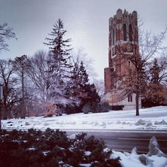

To Be honest, I am very scared of the winter time. You can see where I come from with the image above. I am not built well for this type of environment, a lot of my friends here say that it isn't that bad but I really just don't believe them! Does that make me a bad friend? Anyways, I am a lot more familiar to the warm days and the humid nights 24/7 rather than the dry cold nights that await me, I truly wonder how the snow will feel like, I know it is made out of water, but I can assume that it has a different type of feeling in your hand, obviously cold, but I just wonder how it will truly feel. As I sit here with the window open allowing the fresh breeze, I must admit that this breeze is getting a bit too “fresh” if you can call it that. Back home we would open windows and doors to get the heat out of the house and allow in the fresh Caribbean air to fill the house with the smell of freshness from the orchard and the salt from the sea. Here I predict myself closing more windows than usual, and inviting the nasty smell of my roommate’s disgusting deodorant into my poor nostrils.
How much colder can it get?

Recently I have learned that in the start of twentynine there was a polar vortex sent by ANTARCTICA AIR right to East Lansing and covered the land in a cold ice wasteland like if the whitewalkers took over without the dragons and the zombies. I will not lie, if another polar vortex happens while I am living in this zip code, I will pack up and move to another WARMER institution! I did a lot of research prior to coming here and hopefully I have covered everything that I need in order to survive those cold walks to MI349 when its at thirty degrees! I was able to get everything except the thermal underwear, I am not too sure on my standing with the thermal underwear. I just don't know how I feel about walking around with underwear that reaches all the way to my ankles, still haven't gotten around to that idea yet. Also, I was a bit nervous with the winter jackets, I was wondering if anything that is not Canadian goose would be of good quality, but then i noticed that canada geese cost A LOT OF MONEY. But the north face had alot of well priced jackets that hopefully are of the same quality.